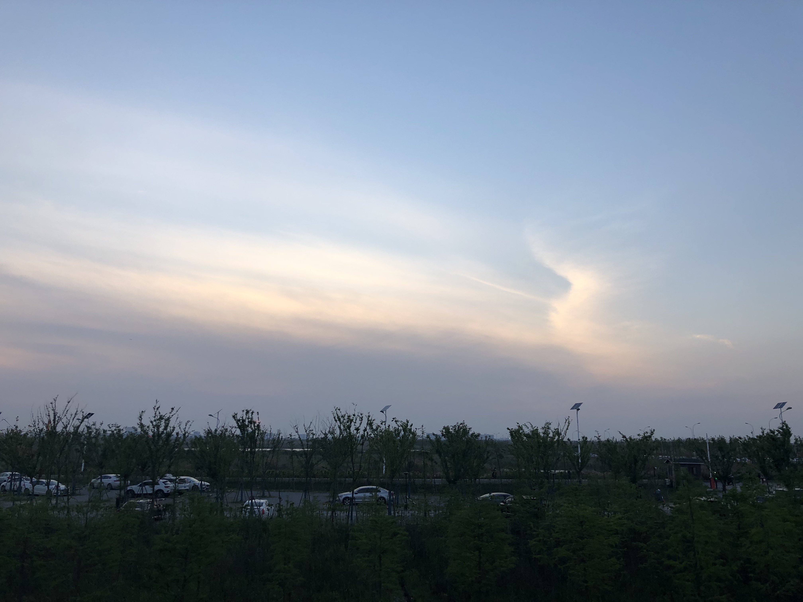
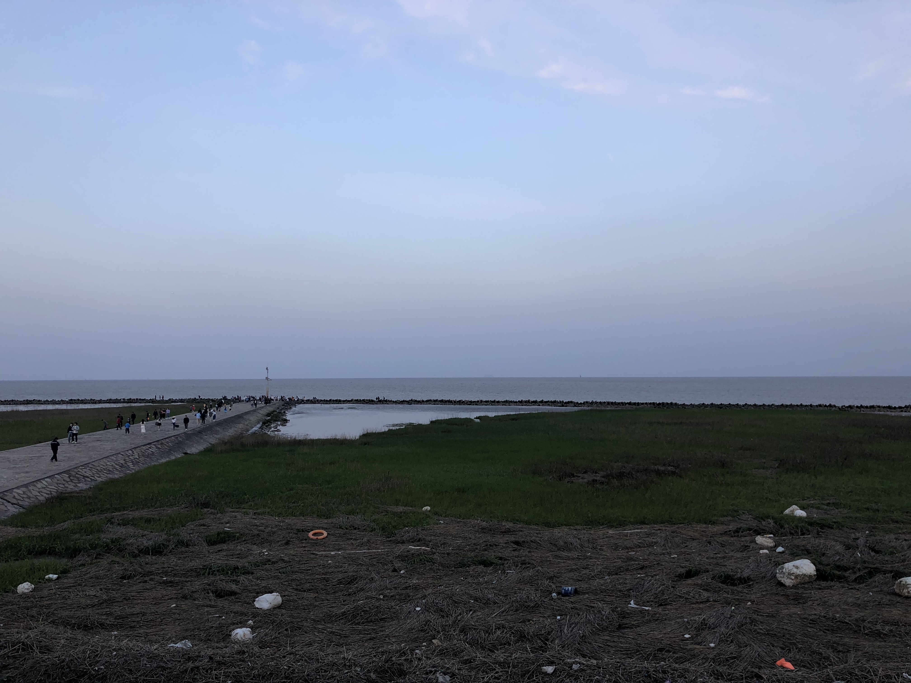
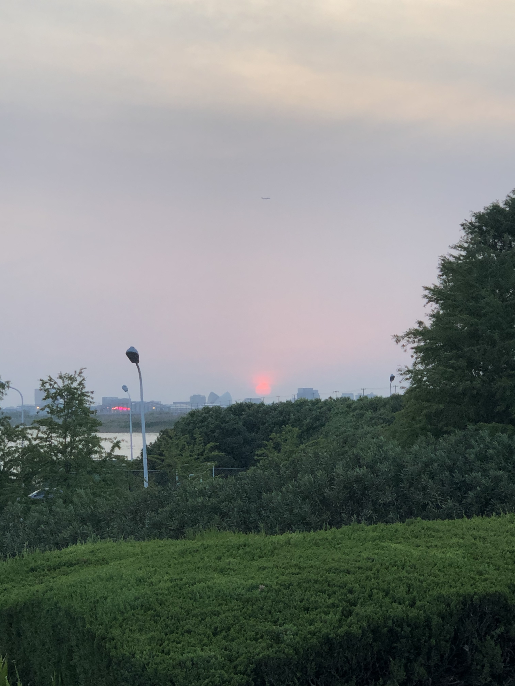
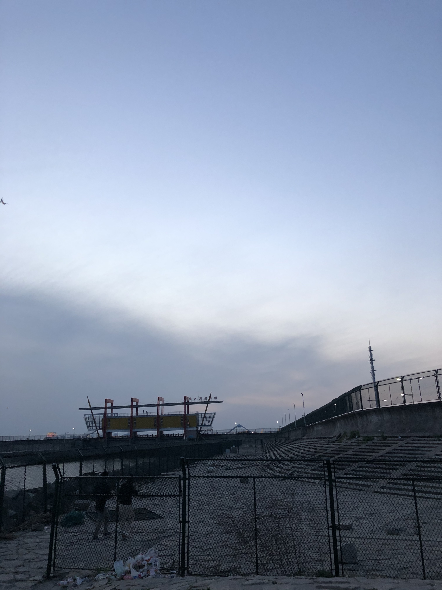
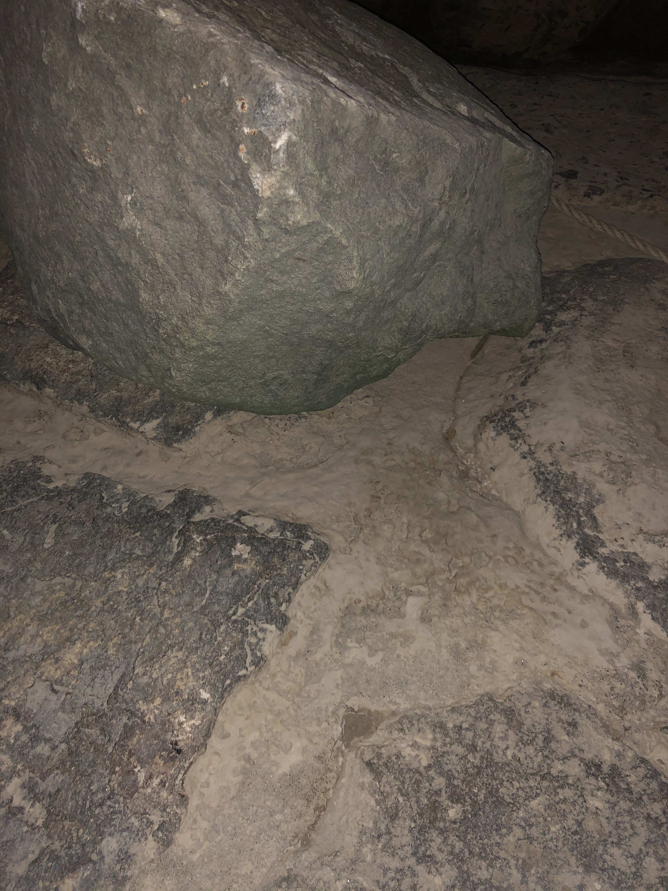

2022-07-17
三个月后，她给了我一张她画的照片，我非常惊喜，因为她画的是那天我们在临港的角落所看到的大海与天空。画面被两串水文浮标和海平线所分割，阳光映在云上，反射出的橘黄色光辉与整体的亮蓝色形成对比。看到这幅画时，我仿佛可以听见海浪拍打岸的声音，大风刮过我们中间的声音，以及我的砰砰心跳声......彼时我们正在世纪汇广场楼下的汤圆店等待上餐，她害羞地把这幅画交给我，我开心得不知道说什么话好。
快要到五一假期，我问她要不要去玩，我不知道这是否会太冒犯她，因为她看起来是个很难拒绝别人的女孩。她很爽快地答应了我，我就去小红书上搜有什么适合约会的地方。书上说“去滴水湖看日出”是个绝美的选项，可是我看了看到滴水湖的距离，回顾了自己没有驾照的事实，决定把约会日程改为“去滴水湖看日落”。不过在滴水湖是看不到日落的——大海在东南，而太阳会从西边落下，这我早就知道了。但是我还是想和她去海边，这很浪漫不是吗？
她中午和朋友吃完饭后，我们就在世纪大道碰了头。我从站台的这一端跑到那一端才找到她，她看起来把开心写在了脸上。她调侃了一下我穿的粉红色球衣，于是从此我不敢在她面前穿粉红色球衣。我们在16号线上似乎待了一个下午，她说辣妹服装不适合她，她和我强调了一下防晒的重要性，她问我“书院”是个什么地方，她告诉我对面座位上的妹妹好瘦好可爱，她说她要嫁给一个有钱人，也许是学计算机的男人。后来我才知道，她是为了我才会说这么多话的，她一直在期待我说点什么......我很木讷，只能在她看风景的时候偷偷地看着她。
我们发现临港的风非常大，于是便去星巴克坐了一会，顺便规划接下来的路线。从地铁站出来到海边还有相当远的一段距离，我原计划搭乘公交车通行，出人意料的是，公交车迟迟不来。我很担心我们赶不上太阳落山的时刻。无奈之下我们只好打了辆出租车，到观海公园的时候夕阳已经快掉下天际线了。“太阳根本就不在海这边嘛”，她看起来很失望，但是还是拿起了手机拍下了那个远远的、通红的、远离大海的夕阳。
“下次我们来看日出吧，那样的话太阳就在海上了”我连忙告诉她，内心暗下决定一定要带她看一次日出。观海公园里的人很多，有玩滑板的、有偷偷爬下堤岸的、有拖家带口来旅游的。我带着她一路向西走，走出了公园、走进了堤顶路，旁边有一家看起来性价比就很低的酒店。我在寻找一个可以下到海边的缺口，直到我们走到了路的尽头，看到“禁止游泳”牌子旁有一个像入口的地方。进去之后发现四处都是陡坡和岩石，很不好走。在女孩子面前我自然表现得很勇敢，话也不说就往下走，不过她看起来有点担心。我伸出手想牵着她，她犹豫了一下，让我握住了她的手。她的手凉凉的，细腻柔软，牵起来非常舒服，我很担心自己的手过于粗糙给她留下不好的印象。她笑着说她们五角场的女人绝不认输，一边和我走到了最靠海的那块大石头上。
她给我画的！
初到观海公园
还不太能看到海
不在海边的日落
到达缺口
碎石很多，并不好走
评论区